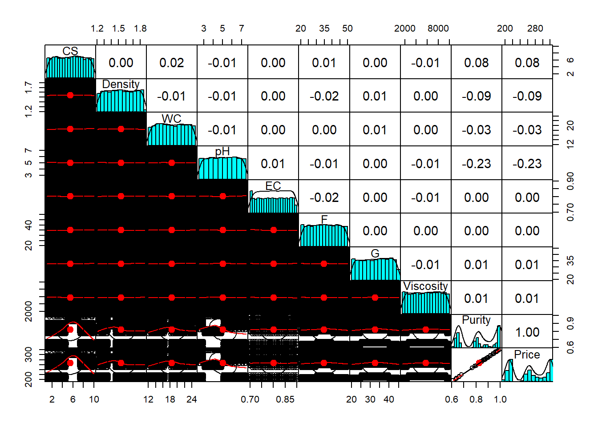
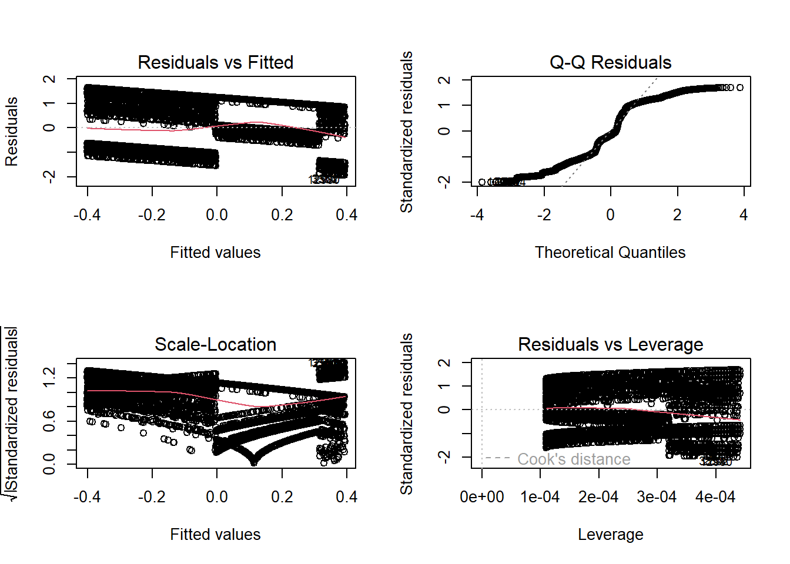

International Institute of Tropical Agriculture (IITA)
Supervised Learning
In supervised learning, the algorithm is trained using a dataset where each input is matched with the corresponding output. This allows the model to learn how to predict the output for new, unseen inputs. This approach is commonly applied to tasks like classification, regression, and object detection.
In supervised learning, the machine learning algorithm learns from labeled data. Labeled data is data that has been tagged with a correct answer or classification. In supervised learning, the model learns from labeled examples (input-output pairs). It predicts outputs for new inputs. Classification and regression are common tasks.
Source:geeks for geeks
Examples
Here are some examples of supervised learning:
Regression
Classification
Object detection
Spam detection
Predictive analytics
Medical diagnosis
Speech recognition
Dimensional Reduction
Regression Use Case
Let’s consider the Honey.Wildflower.csv dataset (13,016 records), this is a dataset in the public domain (Food science) with the following variables:
CS (Color Score): Represents the color score of the honey sample, ranging from 1.0 to 10.0.
Density: Represents the density of the honey sample in grams per cubic centimeter ranging from 1.21 to 1.86.
WC (Water Content): Represents the water content in the honey sample, ranging from 12.0% to 25.0%.
pH: Represents the pH level of the honey sample, ranging from 2.50 to 7.50.
EC (Electrical Conductivity): Represents the electrical conductivity of the honey sample in milli Siemens per centimeter.
F (Fructose Level): Represents the fructose level of the honey sample, ranging from 20 to 50.
G (Glucose Level): Represents the glucose level of the honey sample, ranging from 20 to 45.
Pollen_analysis: Represents the floral source of the honey sample.
Purity: Represents the purity of the honey sample, ranging from 0.01 to 1.00.
Price: The calculated price of the honey.
STEP 1 - Data Import
The objective of this exercise is to develop a model that predicts the price of honey
Let’s follow our 4 steps to address the objective:
STEP 1 - Data pre-processing
STEP 2 - Train the Model
STEP 3 - Evaluate the Model
STEP 4 - Test the Model
library(tidyverse) #for data import & wrangling library(caret) #for model performance evaluation data <-read_csv("Honey.Wildflower.csv", na =c("", "NA")) data
CS Density WC pH
Min. : 1.000 Min. :1.210 Min. :12.00 Min. :2.500
1st Qu.: 3.230 1st Qu.:1.380 1st Qu.:15.29 1st Qu.:3.790
Median : 5.530 Median :1.540 Median :18.49 Median :5.020
Mean : 5.492 Mean :1.537 Mean :18.51 Mean :5.012
3rd Qu.: 7.680 3rd Qu.:1.700 3rd Qu.:21.76 3rd Qu.:6.250
Max. :10.000 Max. :1.860 Max. :25.00 Max. :7.500
EC F G Pollen_analysis
Min. :0.7000 Min. :20.00 Min. :20.01 Length:13016
1st Qu.:0.7500 1st Qu.:27.59 1st Qu.:26.36 Class :character
Median :0.8000 Median :34.93 Median :32.78 Mode :character
Mean :0.8009 Mean :34.95 Mean :32.64
3rd Qu.:0.8500 3rd Qu.:42.37 3rd Qu.:38.95
Max. :0.9000 Max. :50.00 Max. :45.00
Viscosity Purity Price
Min. :1500 Min. :0.6100 Min. :196.2
1st Qu.:3631 1st Qu.:0.6600 1st Qu.:213.0
Median :5800 Median :0.8200 Median :264.5
Mean :5752 Mean :0.8263 Mean :265.8
3rd Qu.:7876 3rd Qu.:0.9700 3rd Qu.:312.8
Max. :9999 Max. :1.0000 Max. :321.9
The results above shows the summary statistics of each attributes in the dataset
# Visualize the relationship among the attributes psych::pairs.panels(data |>select(-Pollen_analysis), gap =0, pch=21)

The plot shows the distribution of each feature and their relationship with other features. As shown, purity is perfectly correlated with the target feature - price we will exclude this attribute in our model because it distorts the regression results, making the linear regression coefficients of other features unreliable. Methods like regularization techniques (Lasso & Ridge Regression) which we are not covering in the course could be used to handle such case. We could have dropped those attributes with no strong correlation with Price individually, but they could have a combined effect with other attributes. Hence, it’s worth keeping them for further analysis.
Also, looking at the distribution of each attribute, some are skewed while some are not. Let us scale the attributes to have them on uniform scale.
# Feature scaling - exclude the categorical & the purity attribute data.sc <-scale(data |>select(-c(Purity, Pollen_analysis)), center =TRUE, scale =TRUE) |>as.data.frame() head(data.sc)
STEP 3 - Data partition into training & testing datasets
# Let's partition the dataset to training & testing datasets using the 70 - 30 split ratio ind <-sample(c(TRUE, FALSE), nrow(data.sc), replace =TRUE, prob =c(0.7, 0.3)) training <- data.sc[ind==TRUE,] testing <- data.sc[ind==FALSE,] # Cross check the dimension of the two datasets dim(training)
[1] 9132 9
dim(testing)
[1] 3884 9
STEP 4 - Build the Model
To build a simple linear regression model, let us consider the pH attribute of the dataset given that it has the highest correlation coefficient with the target feature.
# Simple Linear Regression model.s <-lm(Price ~ pH, data=training) model.s
Before making use of the model for prediction, we need to assess the significance of the model using the function summary()
# Model Summary summary(model.s)
Call:
lm(formula = Price ~ pH, data = training)
Residuals:
Min 1Q Median 3Q Max
-1.9403 -0.9352 -0.1515 1.0167 1.6457
Coefficients:
Estimate Std. Error t value Pr(>|t|)
(Intercept) -0.00519 0.01017 -0.511 0.61
pH -0.22816 0.01012 -22.538 <2e-16 ***
---
Signif. codes: 0 '***' 0.001 '**' 0.01 '*' 0.05 '.' 0.1 ' ' 1
Residual standard error: 0.9713 on 9130 degrees of freedom
Multiple R-squared: 0.0527, Adjusted R-squared: 0.0526
F-statistic: 508 on 1 and 9130 DF, p-value: < 2.2e-16
The regression coefficient of pH in the model is -0.228, which imply that a unit increase in the pH level of honey will lead to a significant reduction in the average price of honey by 0.228. The R-squared result showed that about 5% of the variability in the price of honey can be explained by the pH of the honey. Also, the residual standard error is 0.972 which implies that the observed price deviate from the predicted value approximately by 0.972 unit on average using pH attribute alone.
# Model Diagnostics par(mfrow=c(2,2)) plot(model.s)

STEP 5 - Model Performance Evaluation
Let take a look at the Q-Q Residuals & Residual vs Fitted plots, as we can see the data points are not distributed randomly and they do not to align with the diagonal line which imply that the model do not fit the data well. This step is an important step as it helps evaluate how well the model will generalize to an independent dataset. Common metrics used to evaluate regression model performance are R-squared (R2), Root Mean Squared Error (RMSE), and Mean Absolute Error (MAE). These metrics can simply be estimated using the testing dataset or re-sample the data multiple time before computing the metrics.
# Cross Validation Method 2 - define training controlset.seed(17) train.cv <-trainControl(method ="repeatedcv", number =10, ##number of resampling iteration (we do more than 10 in production) repeats =5) ##number of repeated k-fold CV to compute # Train the model model.cv.s <-train(Price ~ pH, dat=training, method ="lm", trControl = train.cv) # To get more options names(getModelInfo()) # Make prediction and compute the R2, RMSE and MAE pred.cv.s <-predict(model.cv.s, testing)data.frame( R2 =R2(pred.cv.s, testing$Price ), RMSE =RMSE(pred.cv.s, testing$Price ), MAE =MAE(pred.cv.s, testing$Price ))
R2 RMSE MAE
1 0.05592245 0.9766103 0.8717283
The correlation between the observed value of the honey price and the predicted value is 5.8% (NB: the higher the better) which is an indication that the model poorly fit the data. Similarly, the same conclusion can be made considering the higher values of the model’s RMSE & MAE (NB: lower values are better). This implies that the attribute pH alone does not capture the variability in the Price of honey in the dataset. Therefore, let’s consider fitting multiple linear regression.
Classification Used Case
The agricolae package in R is primarily designed for agricultural research, providing tools for design, analysis, and multivariate analysis. However, it does not directly focus on classification in the traditional supervised machine learning sense (like you would find in packages such as caret, randomForest, or e1071).
Nevertheless, you can use R to perform classification with some basic functions. I can provide you a sample workflow for performing classification using a dataset typically found in agriculture. Here’s a basic example using the iris dataset (which is not from agricolae, but it is a commonly used dataset for demonstrating classification).
STEP 1 - Data Import
First, make sure to install the required packages (if you haven’t already):
install.packages("agricolae", repos ="https://cran.r-project.org/") install.packages("caret") install.packages("randomForest", repos ="https://cran.r-project.org/") # Load required libraries library(agricolae) library(caret) # For easy data splitting and model training library(randomForest)
Load and Inspect the Dataset
Load the iris dataset from the agricolae package and inspect its structure.
# Load the iris dataset data(iris) # Inspect the dataset head(iris)
Sepal.Length Sepal.Width Petal.Length Petal.Width
Min. :4.300 Min. :2.000 Min. :1.000 Min. :0.100
1st Qu.:5.100 1st Qu.:2.800 1st Qu.:1.600 1st Qu.:0.300
Median :5.800 Median :3.000 Median :4.350 Median :1.300
Mean :5.843 Mean :3.057 Mean :3.758 Mean :1.199
3rd Qu.:6.400 3rd Qu.:3.300 3rd Qu.:5.100 3rd Qu.:1.800
Max. :7.900 Max. :4.400 Max. :6.900 Max. :2.500
Species
setosa :50
versicolor:50
virginica :50
Step 3 - Data partition into training and testing datasets
Split the dataset into training (70%) and testing (30%)
set.seed(123) # For reproducibility trainIndex <-createDataPartition(iris$Species, p = .7, list =FALSE, times =1) irisTrain <- iris[trainIndex, ] irisTest <- iris[-trainIndex, ]
Step 4 - Build the model
# Fit a classification model using Random Forest model_rf <-train(Species ~ ., data = irisTrain, method ="rf") # Model summary print(model_rf)
Random Forest
105 samples
4 predictor
3 classes: 'setosa', 'versicolor', 'virginica'
No pre-processing
Resampling: Bootstrapped (25 reps)
Summary of sample sizes: 105, 105, 105, 105, 105, 105, ...
Resampling results across tuning parameters:
mtry Accuracy Kappa
2 0.9488042 0.9221447
3 0.9468995 0.9192369
4 0.9427645 0.9129347
Accuracy was used to select the optimal model using the largest value.
The final value used for the model was mtry = 2.
Results Across Tuning Parameters:
mtry: In Random Forest, ‘mtry’ refers to the number of features randomly selected at each split in the decision trees. The results presented include three values for mtry (2, 3, and 4).
For mtry = 2, the model achieved the highest accuracy of 0.9488 and a Kappa statistic of 0.9221.
For mtry = 3, the accuracy was slightly lower at 0.9469, with a Kappa of 0.9192.
For mtry = 4, the accuracy dropped to 0.9427, with a Kappa of 0.9129.
Optimal mtry Selected: The model selected for final use is mtry = 2, which had the highest accuracy. This indicates that selecting two features for each decision tree split was the most effective in classifying the Iris species in this scenario. Interpretation of Performance Metrics:
Accuracy: An accuracy of around 94.9% suggests that the model correctly classifies about 94.9% of the instances in a typical scenario. This is quite high, especially for a classification problem with three classes.
Kappa Statistic: The Kappa statistic is a measure of agreement between the predicted and observed classifications. A Kappa value above 0.9 (as seen here) indicates almost perfect agreement, suggesting that the model’s predictions are very reliable. Conclusion and Further Considerations: Given the high accuracy and Kappa scores, the Random Forest model seems to perform exceptionally well on this dataset.
Step 5 - Evaluate Model Parameter
# Make predictions on the test set predictions <-predict(model_rf, irisTest) # Confusion matrix to evaluate the model confusion_matrix <-table(irisTest$Species, predictions)print(confusion_matrix)
# Example of fitting a random forest model library(randomForest) rf_model <-randomForest(Species ~ ., data = iris) # Check the class of the model object class(rf_model)
Explanation:
Loading Libraries: We load the agricolae (for agricultural data analysis) and caret (for classification and other machine learning tasks) libraries.
Dataset: We use iris, a built-in dataset in R which contains information about different species of iris flowers based on sepal and petal dimensions.
Data Splitting: The dataset is split into training and test sets to evaluate the performance of our model.
Model Training: We train a Random Forest classifier on the training dataset. The Species column is our target variable, and the rest are features.
Predictions: We use our trained model to make predictions on the test dataset.
Confusion Matrix: Finally, we evaluate our model’s performance using a confusion matrix, which shows how many instances were correctly predicted by the model.